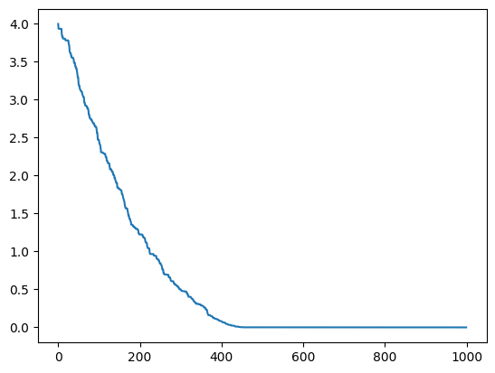
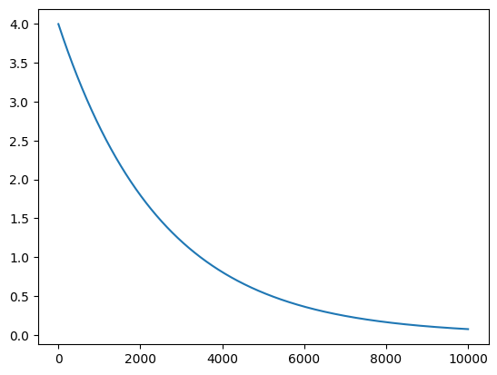
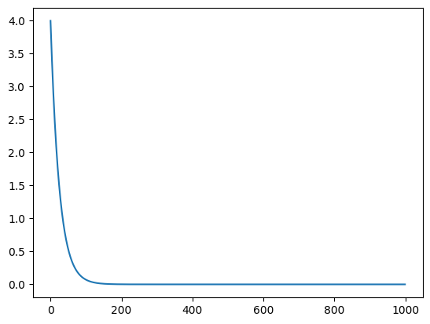
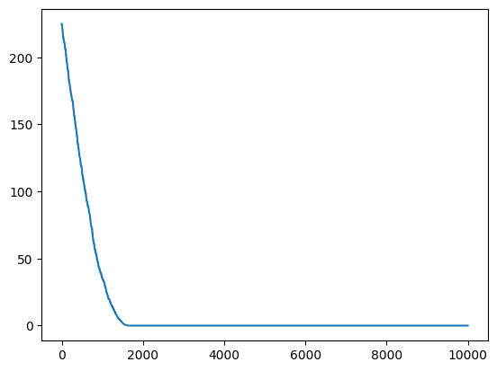
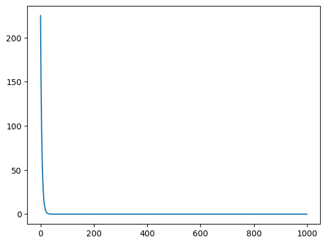
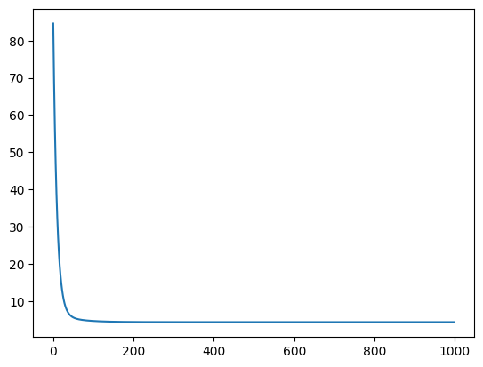
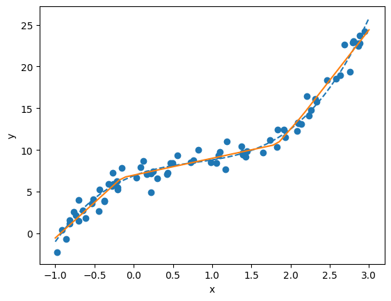

Notebook 5 - Optimization and neural networks
import copy
import matplotlib.pyplot as plt
import numpy as np
import scipy.optimize
import torch
import timeOptimization
In this session we will talk about optimization in general and its application to machine learning.
First we will look into a general setting. Let us simply minimize the function : $ f(x) = x^2 $ when starting from \(x_0=2\)
A one-liner for that is to use scipy.optimize
# Define function f(x) which returns x squared
def f(x):
return x ** 2
# Define an initial value to start the optimisation
x_0 = 2
# Use the 'minimize' function to find the value of x that minimizes f(x)
# The function starts at x_0 and searches for the minimum
result = scipy.optimize.minimize(f, x_0)
# Extract the value of x that minimizes the function
# It should be close to zero for this function
result.xarray([-1.88846401e-08])Implementing a random search
A first possible algorithm is to sample a change for x and keep the best value. We iterate the following steps : - take a neighbor for x, sampling a random number with standard variation 0.01. - evaluate these two possibilities - move to the best one
Implement that with a for loop with 1000 iterations.
# Define the number of iterations for the optimization algorithm
n_iter = 1000
# Initialize x with the initial value x_0
x = x_0
# Create a list to store all the results of the function over the iterations
all_results = list()
# Define a function that samples around the current value of x
# It adds Gaussian noise with a standard deviation of 0.01
def sample_around(x):
return x + np.random.normal(scale=0.01)
# Loop over the specified number of iterations
for _ in range(n_iter):
# Sample around the current value of x
sample = sample_around(x)
# Calculate the function values for x and the sample
f_x, f_sample = f(x), f(sample)
# If the function value for the sample is lower than that of x
# then update x with the sample value
if f_sample < f_x:
x = sample
all_results.append(f_sample)
# Otherwise, keep the current value of x
else:
x = x
all_results.append(f_x)
# Print the final value of x after all iterations
print(x)
# Plot the function values over the iterations
plt.plot(all_results)2.404111167080735e-05
Implementing an exaustive search
A first possible algorithm is to try all changes for x and keep the best value. We iterate the following steps : - try a smaller and a larger x value of 0.01. - evaluate these two possibilities - move to the best one
Implement that with a for loop with 1000 iterations.
n_iter = 1000
x = x_0
all_results = list()
for _ in range(n_iter):
# Compute two new values around x: one smaller and one larger
smaller, larger = x - 0.01, x + 0.01
# Compute the function values for these two new values
f_small, f_large = f(smaller), f(larger)
# If the function value for the smaller value is less than that of the larger value
# then update x with the smaller value
if f_small < f_large:
x = smaller
all_results.append(f_small)
# Otherwise, update x with the larger value
else:
x = larger
all_results.append(f_large)
print(x)
plt.plot(all_results)-1.6410484082740595e-15
Implementing a gradient descent ‘by hand’
Now let us implement the gradient descent, by remembering that \(\frac{df}{dx} = 2x\)
We iterate the following steps : - compute the gradient value at x - Update x : \(x \leftarrow x - 0.01 \frac{df}{dx}\)
Implement that with a for loop with 1000 iterations.
# Define the derivative of the function f(x) = x^2, which is df(x) = 2x
def df(x):
return 2 * x
all_results = list()
n_iter = 10000
x = x_0
for _ in range(n_iter):
# Compute the derivative of the function at the current position of x
dx = df(x)
# Update x using the gradient descent method
# We subtract a small multiple of the derivative to move towards the minimum
x = x - 0.0001 * dx
# Add the function value at the current position of x to the results list
all_results.append(f(x))
print(x)
plt.plot(all_results)0.270616430555459
Implementing a gradient descent with automatic differentiation (by hand)
We want to use the same algorithm but without knowing the formula of differentiation. We instead want to rely on Pytorch
Below is the implementation of the same method as before, with PyTorch.
Can you confirm that we get the same results ?
all_results = list()
n_iter = 1000
# Initialize x as a PyTorch tensor with an initial value of 2.0
# The argument requires_grad=True enables gradient's computations for this tensor
x = torch.tensor(2.0, requires_grad=True)
for i in range(n_iter):
# Compute the function value f(x) = x^2
f_x = x ** 2
# Compute the gradient of f_x with respect to x
f_x.backward()
# Update x using the gradient descent method
# We subtract a small multiple of the derivative to move towards the minimum
x.data = x - 0.01 * x.grad.item()
# Reset the gradient to None to avoid accumulation of gradients
x.grad = None
# Add the function value at the current position of x to the results list
all_results.append(f_x.data)
print(x.item())
plt.plot(all_results)3.3659321996282188e-09
Implementing a gradient descent with automatic differentiation (the proper way)
all_results = list()
n_iter = 1000
x = torch.tensor(2.0, requires_grad=True)
# Create an SGD (Stochastic Gradient Descent) optimizer with a learning rate of 0.01
# The momentum parameter is set to 0, so it is not used here
opt = torch.optim.SGD([x], lr=0.01, momentum=0)
for i in range(n_iter):
# Compute the function value f(x) = x^2
f_x = f(x)
# Compute the gradient of f_x with respect to x
f_x.backward()
# Update x using the SGD optimizer
opt.step()
# Reset gradients to zero to avoid gradients accumulation
opt.zero_grad()
all_results.append(f_x.data)
print(x.item())
plt.plot(all_results)3.365942857769255e-09
Bigger input space
Let us now look at a more complicated input space, the function takes as input five numbers and returns : \(f_2(x_1, x_2, x_3, x_4, x_5) = (x_1 + x_2 + x_3 + x_4 + x_5)^2\)
Now it is more costly to find the right direction randomly. Try the random algorithm on this new function.
# Define a function f_2 that takes a vector x as input
# and returns the square of the sum of its elements
def f_2(x):
return (x[0] + x[1] + x[2] + x[3] + x[4]) ** 2
new_x_0 = (1, 2, 3, 4, 5)
f_2(new_x_0)225n_iter = 10000
x = new_x_0
all_results = list()
# Define a function that samples around the current value of x
# It adds Gaussian noise with a standard deviation of 0.01 to each component of x
def sample_around(x):
return x + np.random.normal(size=5, scale=0.01)
for _ in range(n_iter):
# Sample around the current value of x
sample = sample_around(x)
# Calculate the function values for x and the sample
f_x, f_sample = f_2(x), f_2(sample)
# If the function value for the sample is lower than that of x
# then update x with the sample value
if f_sample < f_x:
x = sample
all_results.append(f_sample)
# Otherwise, keep the current value of x
else:
x = x
all_results.append(f_x)
print(x)
plt.plot(all_results)[-1.71487693 -0.42462138 -0.24961091 0.60905373 1.78006869]
Now let us try the gradient approach.
all_results = list()
n_iter = 1000
x = torch.tensor(new_x_0, requires_grad=True, dtype=float)
opt = torch.optim.SGD([x], lr=0.01, momentum=0)
for i in range(n_iter):
f_x = f_2(x)
f_x.backward()
opt.step()
opt.zero_grad()
all_results.append(f_x.data)
print(x)
plt.plot(all_results)tensor([-2.0000e+00, -1.0000e+00, -2.0061e-15, 1.0000e+00, 2.0000e+00],
dtype=torch.float64, requires_grad=True)
Actual machine learning examples
Now instead of minimizing random functions, let us minimize the error of a linear model !
We will use generated data (that I used during my class) : we simulate a hidden relationship (base_function) by sampling input-output pairs with noise.
Let us generate the data once again and plot it.
import numpy as np
# Set the seed for the random number generator to ensure reproducibility
np.random.seed(42)
# Define the base function that we will sample
def base_function(x):
y = 1.3 * x ** 3 - 3 * x ** 2 + 3.6 * x + 6.9
return y
# Define the lower and upper bounds for the x values
low, high = -1, 3
# Define the number of points to sample
n_points = 80
# Generate random values uniformly distributed between 'low' and 'high'
# Each value is shaped as a 2D array with a single column
xs = np.random.uniform(low, high, n_points)[:, None]
# Calculate the values of the base function for the sampled points
sample_ys = base_function(xs)
# Add Gaussian noise to the sampled values
ys_noise = np.random.normal(size=(len(xs), 1))
noisy_sample_ys = sample_ys + ys_noise
# Create a series of linearly spaced points between 'low' and 'high'
# Each point is shaped as a 2D array with a single column
lsp = np.linspace(low, high)[:, None]
# Compute the values of the base function for these linearly spaced points
# These represent the true values of the function, without noise
true_ys = base_function(lsp)
# Plot the base function as a dashed line
plt.plot(lsp, true_ys, linestyle='dashed')
# Plot the noisy samples
plt.scatter(xs, noisy_sample_ys)
plt.xlabel('x')
plt.ylabel('y')
plt.show()
Gradient descent using torch.
First create a torch version of these objects.
We specify a float32 dtype for our objects.
# Convert the numpy arrays 'noisy_sample_ys', 'xs' and 'lsp' to pytorch tensors of type float
# This allows the use of PyTorch functionalities for further computations
torch_noisy_sample_ys = torch.from_numpy(noisy_sample_ys).float()
torch_xs = torch.from_numpy(xs).float()
torch_lsp = torch.from_numpy(lsp).float()Let us try to fit a linear model by hand, instead of simply relying on scikit-learn !
The model of a linear regression is : \(f_\theta (x) = (\theta_1 x + \theta_0)\)
Careful ! We do not want to minimize the function of x itself.
We want to minimise the errors we make, also called the loss function. We will do this by adjusting the parameters \(\theta\) of the function, starting from an arbitrary value of (1,1). This loss function is the sum of the square errors at each point :
\[ \min_{\theta}\mathcal{L} (\theta) = 1/N\sum_i (y_i - f_{\theta} (x_i))^ 2 \\ = 1/N\sum_i (y_i - (\theta_1 x_i + \theta_0))^ 2 \]
# Define a function f_theta that represents a line with equation y = theta[1] * x + theta[0]
# It takes as input a tensor x and a tensor of parameters theta
def f_theta(x, theta):
return theta[1] * x + theta[0]
# Define a loss function that computes the mean squared error
# between the values predicted by f_theta and the noisy values (torch_noisy_sample_ys)
def loss_function(theta):
return torch.mean((torch_noisy_sample_ys - f_theta(torch_xs, theta)) ** 2)
# Initialize the theta parameters with initial values (1.0, 1.0)
# requires_grad=True enables gradient computations for these parameters
initial_theta = torch.tensor((1., 1.), requires_grad=True)
# Compute the initial value of the loss function, with the initial parameters
initial_loss = loss_function(initial_theta)
print(initial_loss)tensor(84.6089, grad_fn=<MeanBackward0>)all_results = list()
n_iter = 1000
theta = copy.deepcopy(initial_theta)
opt = torch.optim.SGD([theta], lr=0.01, momentum=0.0)
for i in range(n_iter):
# Compute the loss value for the current parameters theta
loss_value = loss_function(theta)
# Compute the gradients of the loss with respect to theta
loss_value.backward()
# Update the parameters theta using the optimizer and the computed gradients
opt.step()
# Reset gradients to zero to avoid accumulation
opt.zero_grad()
# Add the current loss value to the results list
all_results.append(loss_value.data)
print(theta.data)
plt.plot(all_results)tensor([5.4648, 4.7578])
We have values for the parameters now. Let us look at what they look like.
Use the f_theta function on the linspace to plot your model.
# Compute the values predicted by the linear model f_theta for the linearly spaced points (torch_lsp)
# .detach() is used to detach the tensor from the computation graph, meaning that subsequent operations
# will not be tracked for gradient computation
# .numpy() converts the PyTorch tensor to a NumPy array (for the subsequent plotting here)
predicted_ys = f_theta(torch_lsp, theta).detach().numpy()
# Plot the original base function as a dashed line
plt.plot(lsp, true_ys, linestyle='dashed')
# Plot the values predicted by the linear model as a solid line
plt.plot(lsp, predicted_ys)
# Plot the simulated data (noisy samples)
plt.scatter(xs, noisy_sample_ys)
plt.xlabel('x')
plt.ylabel('y')
plt.show()
# Initialize the theta parameters with initial values (1.0, 1.0)
# requires_grad=True enables gradient computations for these parameters
theta_0 = torch.tensor((1., 1.), requires_grad=True)
# Set the number of iterations and initialize the optimizer
n_iter = 30
opt = torch.optim.SGD([theta_0], lr=0.02, momentum=0.0)
for i in range(n_iter):
# Every 5 iterations, plot the linear model predicted by the linear model
if i % 5 == 0:
predicted_ys = f_theta(torch_lsp, theta_0).detach().numpy()
plt.plot(lsp, predicted_ys, label='Iteration {}'.format(i))
# Compute the loss
loss_value = loss_function(theta_0)
# Compute the gradients
loss_value.backward()
# Update the parameters using the optimizer (and the computed gradients)
opt.step()
# Reset gradients to zero
opt.zero_grad()
# Plot the simulated data (noisy samples)
plt.scatter(xs, noisy_sample_ys)
plt.xlabel('x')
plt.ylabel('y')
plt.legend()
plt.show()
Deep Learning with PyTorch
We start by training a small MLP using built-in functionalities in scikit-learn, with the MLPRegressor class:
from sklearn.neural_network import MLPRegressor
# Create an instance of MLPRegressor, a neural network model for regression
# max_iter=5000 specifies the maximum number of iterations for training
mlp_model = MLPRegressor(max_iter=5000)
# Train the MLP model on the data (xs, noisy_sample_ys)
# xs are the features and noisy_sample_ys are the targets
# .flatten() is used to flatten the noisy_sample_ys array into a 1D vector
# Train the MLP model on the data (xs, noisy_sample_ys)
# xs are the features and noisy_sample_ys are the target values
# .flatten() is used to transform the noisy_sample_ys array into a 1D vector
mlp_model.fit(xs, noisy_sample_ys.flatten())
# Use the trained model to predict the values corresponding to the linearly spaced points (lsp)
predicted_lsp = mlp_model.predict(lsp)
# Plot the simulated data (noisy samples)
plt.scatter(xs, noisy_sample_ys)
# Plot the predictions of the MLP model
plt.plot(lsp, predicted_lsp, color='orange', lw=2)
plt.show()
MLPRegressor works well for this simple data, but it lacks the more advanced deep learning modeling that PyTorch can offer. Let’s start by achieving a similar result to MLPRegressor, but defining our model ourselves and in PyTorch.
By default, the MLP Regressor makes the following computational graph : - input gets multiplied by a matrix with 100 parameters, and an additional parameter is added to each values, giving 100 outputs y (shape = (n_samples, 100)) - ReLU is applied to each of these outputs (shape = (n_samples, 100)). The relu function is implemented in PyTorch with torch.nn.functional.relu(x) - Then this value is multiplied by a matrix to produce a scalar output (again 100 parameters) (shape = (n_samples, 1)) and shifted by an offset.
A quick reminder on matrix multiplication : it is an operation that combines one matrix A of shape (m,n) and a matrix B of shape (n,p) into a matrix C of shape (m,p). In PyTorch (and NumPy), you need to call torch.matmul(A,B) to make this computation.
To make the two big multiplications, we will use one torch tensor of 100 parameters for each multiplication, with the appropriate shape.Create random starting tensors of parameters.
Then implement the asked computation to produce our output from our input. You should debug the operations by ensuring the shapes are correct.
# Create the network parameters with initial random values drawn from a normal distribution
# These parameters are the weights (w1, w2) and biases (b1, b2) of the neural network
# We use torch.normal to generate these random values, with mean 0.0 and std 0.1 to get small initial values
# Don't forget the requires_grad=True that enables gradient computations for these parameters during optimization
# First set of weights w1, of size (1, 100)
# It is applied to a single input feature and maps it to 100 neurons in the hidden layer
w1 = torch.normal(mean=0., std=0.1, size=(1, 100), requires_grad=True)
# First set of biases b1 is of size (1, 100)
# It corresponds to the biases for each neuron in the first layer
b1 = torch.normal(mean=0., std=0.1, size=(1, 100), requires_grad=True)
# Second set of weights w2, of size (100, 1)
# It corresponds to the weights connecting the 100 neurons in the hidden layer to the single output neuron
w2 = torch.normal(mean=0., std=0.1, size=(100, 1), requires_grad=True)
# Second set of biases b2, of size (1,)
# It corresponds to the bias for the output neuron
b2 = torch.normal(mean=0., std=0.1, size=(1,), requires_grad=True)# Define the function f that represents the neural network
# It takes as input a tensor x and uses the weights and biases defined previously
def f(x, weight1=w1, bias1=b1, weight2=w2, bias2=b2):
# Compute the output of the first layer by performing a matrix multiplication
# between the input x and the weights w1, then adding the bias b1
y1 = torch.matmul(x, weight1) + bias1
# Apply the ReLU activation function to the output of the first layer
a1 = torch.nn.functional.relu(y1)
# Compute the final output by performing a matrix multiplication
# between the activated output a1 and the weights w2, then adding the bias b2
out = torch.matmul(a1, weight2) + bias2
return out
# Check that during inference on the data, we obtain an output tensor of shape (80, 1)
# This corresponds to 80 predictions, one for each sample in torch_xs
f(torch_xs).shapetorch.Size([80, 1])Now we will mostly use the optimization procedure above to train our network using Pytorch
n_iter = 2000
# The optimizer takes as input a list containing all the parameters of the network: w1, b1, w2, b2
opt = torch.optim.SGD([w1, b1, w2, b2], lr=0.01)# Loop over the specified number of iterations to train the network
for i in range(n_iter):
# Perform a forward pass to compute the network's predictions for the input data
prediction = f(torch_xs, w1, b1, w2, b2)
# Compute the loss using the mean squared error between the predictions and the noisy target values
loss = torch.mean((prediction - torch_noisy_sample_ys) ** 2)
# Perform a backward pass to compute the gradients of the loss with respect to the parameters
loss.backward()
# Update the network parameters using the SGD optimizer
opt.step()
# Reset gradients to zero to avoid accumulation of gradients from previous iterations
opt.zero_grad()
# Every 100 iterations, print the iteration number and the current loss value
if not i % 100:
print(i, loss.item())0 127.57427978515625
100 4.212352752685547
200 3.9288432598114014
300 3.5219733715057373
400 3.070890188217163
500 2.6809887886047363
600 2.3193771839141846
700 2.018692970275879
800 1.7612323760986328
900 1.5420033931732178
1000 1.365171194076538
1100 1.2181332111358643
1200 1.1024835109710693
1300 1.018798589706421
1400 0.9633015394210815
1500 0.9285883903503418
1600 0.9079622030258179
1700 0.8966582417488098
1800 0.8910239338874817
1900 0.8881052732467651# Compute the values predicted by the neural network model for the linearly spaced points (torch_lsp)
# .detach() is used to detach the tensor from the computation graph, meaning that subsequent operations
# will not be tracked for gradient computation
# .numpy() converts the PyTorch tensor to a NumPy array for plotting
predicted_ys = f(torch_lsp).detach().numpy()
# Plot the original base function as a dashed line
plt.plot(lsp, true_ys, linestyle='dashed')
# Plot the values predicted by the neural network model
plt.plot(lsp, predicted_ys)
# Plot the simulated data (noisy samples)
plt.scatter(xs, noisy_sample_ys)
plt.xlabel('x')
plt.ylabel('y')
plt.show()
Congratulations, you have coded yourself a MLP model ! We have used the computation graph framework.
Now let us make our code prettier (more Pytorch) and more efficient. First let us refactor the model in the proper way it should be coded, by using the torch.nn.Module class. You should add almost no new code, just reorganize the one above into a class.
from torch.nn import Module, Parameter
# Define a class MyOwnMLP which in inherits from the PyTorch Module class
class MyOwnMLP(Module):
# Initialize the parameters of the neural network
def __init__(self):
# Call the constructor from the parent class
super(MyOwnMLP, self).__init__()
# Define the weights and bias for the first layer as parameters of the class
# We initialize them with small values from a normal distribution
self.w1 = Parameter(torch.normal(mean=0., std=0.1, size=(1, 100)))
self.b1 = Parameter(torch.normal(mean=0., std=0.1, size=(1, 100)))
# Define the weights and bias for the second layer in the same way
self.w2 = Parameter(torch.normal(mean=0., std=0.1, size=(100, 1)))
self.b2 = Parameter(torch.normal(mean=0., std=0.1, size=(1,)))
# Define the forward method that specifies the forward pass of the network
def forward(self, x):
# Compute the output of the first layer
y1 = torch.matmul(x, self.w1) + self.b1
# Apply the ReLU activation function to the output of the first layer
a1 = torch.nn.functional.relu(y1)
# Compute the final output of the network
out = torch.matmul(a1, self.w2) + self.b2
return out
# Instantiate the MyOwnMLP model
model = MyOwnMLP()
# Perform a forward pass with the input data torch_xs
out = model(torch_xs)
out.shapetorch.Size([80, 1])Now we are good to also make the data iteration process look like Pytorch code !
We need to define a Dataset object. Once we have this, we can use it to create a DataLoader object
from torch.utils.data import Dataset, DataLoader
class CustomDataset(Dataset):
def __init__(self, data_x, data_y):
self.data_x = data_x
self.data_y = data_y
def __len__(self):
return len(self.data_x)
def __getitem__(self, idx):
x = self.data_x[idx]
y = self.data_y[idx]
return x, y# Create an instance of CustomDataset with the input data torch_xs and the labels torch_noisy_sample_ys
dataset = CustomDataset(data_x=torch_xs, data_y=torch_noisy_sample_ys)
# Create a DataLoader for the dataset
# batch_size=10 : the DataLoader will provide batches of 10 samples at a time
# num_workers=6 : use 6 processes to load the data in parallel, which can speed up the process
dataloader = DataLoader(dataset=dataset, batch_size=10, num_workers=6)
# Let's record the time to go through all the data batches
start = time.time()
# Loop over each batch of data provided by the DataLoader
for point in dataloader:
# Here We do nothing with the data, we simply move to the next iteration
pass
# Final time is:
print('Done in pytorch : ', time.time() - start)/usr/local/lib/python3.12/dist-packages/torch/utils/data/dataloader.py:424: UserWarning: This DataLoader will create 6 worker processes in total. Our suggested max number of worker in current system is 2, which is smaller than what this DataLoader is going to create. Please be aware that excessive worker creation might get DataLoader running slow or even freeze, lower the worker number to avoid potential slowness/freeze if necessary.
self.check_worker_number_rationality()
/usr/local/lib/python3.12/dist-packages/torch/utils/data/dataloader.py:432: UserWarning: This DataLoader will create 6 worker processes in total. Our suggested max number of worker in current system is 2, which is smaller than what this DataLoader is going to create. Please be aware that excessive worker creation might get DataLoader running slow or even freeze, lower the worker number to avoid potential slowness/freeze if necessary.
self.check_worker_number_rationality()Done in pytorch : 0.2601127624511719The last thing missing to make our pipeline truly Pytorch is to use a GPU.
In Pytorch it is really easy, you just need to ‘move’ your tensors to a ‘device’. You can test if a gpu is available and create the appropriate device with the following lines:
device = 'cuda' if torch.cuda.is_available() else 'cpu'
# device = 'cpu'
# Send the data and the model to the selected device (CPU or GPU)
torch_xs = torch_xs.to(device)
model = model.to(device)Now we finally have all the elements to make an actual Pytorch complete pipeline !
Create a model, and try to put it on a device. Create an optimizer with your model’s parameters Make your data into a dataloader
Then use two nested for loops : one for 100 epochs, and in each epoch loop over the dataloader Inside the loop, for every batch first put the data on the device Then use the semantics of above : - model(batch) - loss computation and backward - gradient step and zero_grad
n_epochs = 100
model = MyOwnMLP()
# Create an Adam optimizer to adjust the model parameters
# Adam is an optimization algorithm that adapts the learning rate for each parameter
opt = torch.optim.Adam(model.parameters(), lr=0.01)
# Create an instance of CustomDataset with the input data torch_xs and the labels torch_noisy_sample_ys
dataset = CustomDataset(data_x=torch_xs, data_y=torch_noisy_sample_ys)
dataloader = DataLoader(dataset=dataset, batch_size=10, num_workers=0)
loss = 0
# Loop over the specified number of epochs for training
for epoch in range(n_epochs):
# Loop over each batch of data provided by the DataLoader# Don't forget to send to device, the rest is similar to what we had above
for batch_x, batch_y in dataloader:
# Transfer the batch data to the specified device (GPU or CPU)
batch_x, batch_y = batch_x.to(device), batch_y.to(device)
# Perform a forward pass to compute the model's predictions for the input batch
prediction = model(batch_x)
# Compute the loss using the mean squared error between the predictions and the target values
loss = torch.mean((prediction - batch_y) ** 2)
# Perform a backward pass to compute the gradients of the loss with respect to the parameters
loss.backward()
# Update the model parameters using the Adam optimizer
opt.step()
# Reset gradients to zero to avoid accumulation of gradients from previous iterations
opt.zero_grad()
# Convert the loss (tensor) to a scalar value
loss = loss.item()
# Every 10 epochs, print the epoch number and the current loss value
if not epoch % 10:
print(epoch, loss)
# Transfer the trained model to the CPU for later use
model = model.to('cpu')0 69.30423736572266
10 6.083198547363281
20 5.247652053833008
30 4.728358745574951
40 4.456095218658447
50 3.923901081085205
60 3.3487484455108643
70 2.8499550819396973
80 2.378878355026245
90 1.9657154083251953Finally, we can plot the last model
predicted_ys = model(torch_lsp).detach().numpy()
# Plot the original base function as a dashed line
plt.plot(lsp, true_ys, linestyle='dashed')
# Plot the values predicted by the neural network model
plt.plot(lsp, predicted_ys)
# Plot the noisy samples
plt.scatter(xs, noisy_sample_ys)
plt.xlabel('x')
plt.ylabel('y')
plt.show()
This is the end of the practical part of training neural networks !
Of course, a lot more can be done. On this simple toy data, you can try to illustrate concepts of this class: - What happens if you use only 10 data points and increase the noise level ? - Can you observe an overfitting behavior ? - Can you see the impact of using different optimisers (SGD vs Adam) ? - …
Another interesting extension is to use a more advanced (yet manageable dataset), such as FashionMnist. You can use it through the built-in PyTorch objects: torchvision.datasets.FashionMNIST . You can install torchvision with pip install torchvision . More generally, you can follow this tutorial: https://pytorch.org/tutorials/beginner/introyt/trainingyt.html to access the data and have a first model example and training: - Can you compare MLP architectures with CNNs on this task ? - Do you see an overfit on this dataset ? - Does data augmentation helps training on this dataset ?